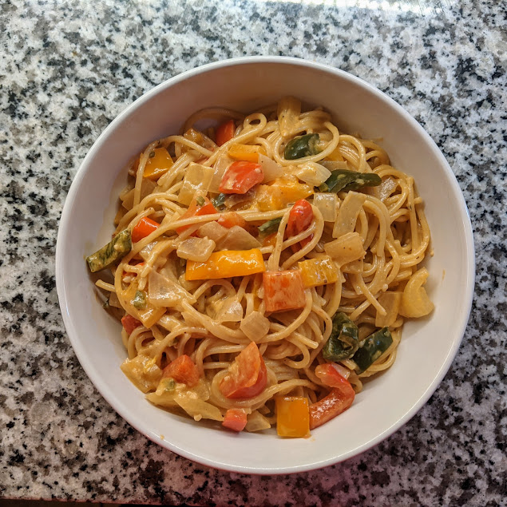
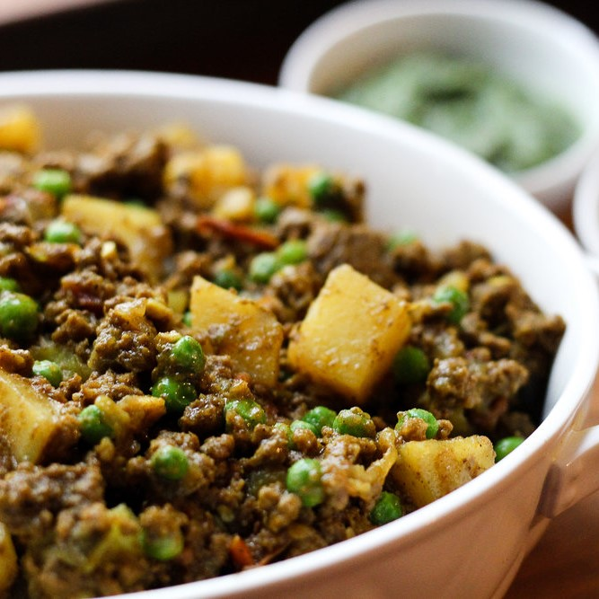
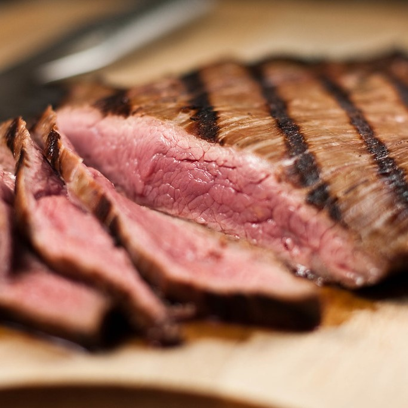
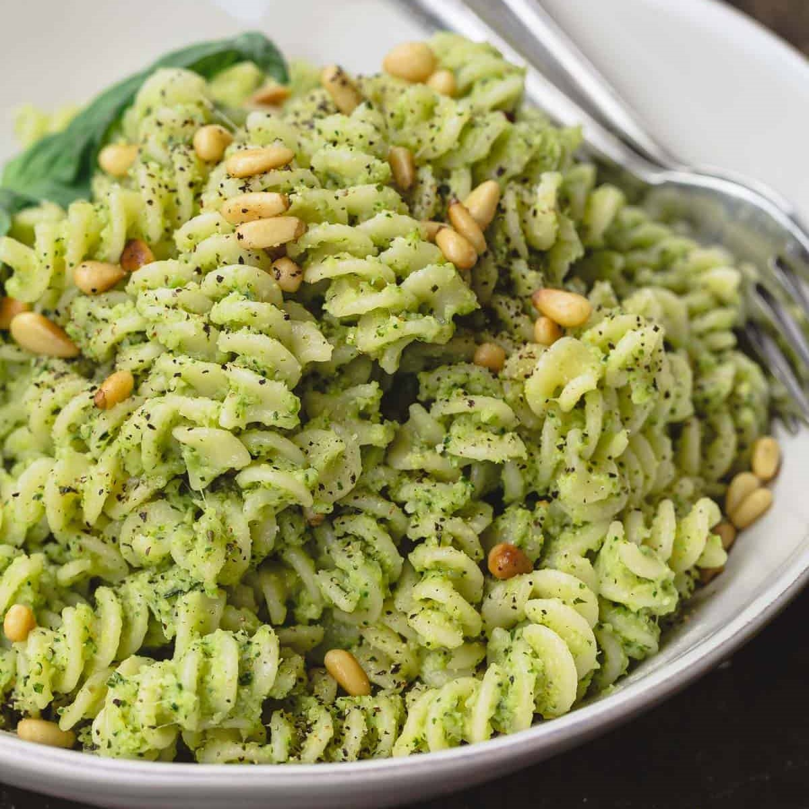

Current Favorites
This is the part where I DON'T bombard you with unnecessary filler about the history and sentimental meaning of each recipe. They're just delicious, does anyone really want to read a narrative?
Simmons Seven Pepper Pasta
Adapted from Ree Drummond's Six Pepper Pasta - we added serrano!
Ingredients
- 1 pound fettuccine
- 2 tablespoons salted butter
- 2 tablespoons olive oil
- 3 cloves garlic, minced
- 1 medium yellow onion, diced
- 6 multi-colored mini sweet peppers, chopped
- 1 red bell pepper, chopped
- 1 orange bell pepper, chopped
- 1 poblano pepper, seeded and chopped
- 1 jalapeno pepper, seeded and chopped
- 1 serrano pepper, seeded and chopped
- salt and black pepper, to taste
- 1 cup tequila
- 2 cups heavy cream
- adobo sauce from 2 cans chipotle peppers
- parmesan cheese for garnish
Directions
- Bring a large pot of salted water to a boil. Cook the pasta according to package instructions, then drain and set aside.
- In a large skillet, heat butter and olive oil over medium heat. Add the garlic, onion, and all of the peppers and season with a pinch of salt and pepper. Cook, stirring, until onions and peppers begin to darken, about 3 minutes. Transfer veggies to a plate and set aside.
- Carefully pour tequila into skillet and let cook for 1 minute while scraping the bottom of skillet to loosen any browned bits. Add broth, bring to a simmer and cook until reduced slightly, 3 to 5 minutes.
- Reduce heat to low and pour in cream. Add adobo sauce, stirring constantly. Cook until sauce starts to thicken, another 4 to 5 minutes.
- Add veggies back to skillet (include any juices that drained onto the plate). Stir and cook until the mixture is bubbly and hot, 1 to 2 minutes. Taste and add salt, pepper and/or adobo sauce if needed.
- Add drained pasta to the sauce and toss to combine. Transfer to bowls and garnish with grated parmesan cheese.
Keema
Adapted from Worthy Pause
Ingredients
- 2 medium yellow onions, diced
- olive oil for frying
- 3 jalapeños, minced (I include the seeds for extra spice)
- 3 medium garlic cloves, minced
- 1 TBSP fresh ginger, minced (or sub 1/2 tsp ground ginger)
- 1 TBSP garam masala, or more to taste
- 1 tsp cumin
- 1 tsp coriander
- >1 tsp turmeric
- >1/4 tsp cinnamon
- 1 lb. ground beef
- 1/2 tsp pepper
- 1 tsp salt
- 2 medium russet potatoes, cubed
- 2 cans fire roasted tomatoes
- 1 cup frozen peas
- 1/4 cup lemon juice
- 3 cups basmati rice, cooked
Directions
- Fry onions in oil on medium high heat, stirring frequently until they caramelize. Be patient — this can take a while (15 to 20 min) but the flavor is SO good.
- Add jalapeño, ginger and garlic and cook for an additional minute or two until fragrant.
- Add garam masala, cumin, coriander, turmeric and cinnamon into pan and stir to coat everything quickly. Add a little extra ghee or oil again if the pan seems dry.
- Add ground beef and brown thoroughly.
- After meat is browned, add salt and pepper to taste.
- Add tomatoes and potatoes. Simmer until potatoes are cooked through, stirring regularly. About 30 minutes.
- Add lemon juice and peas. Cook for another two to three minutes until the peas are tender.
- Serve on top of hot basmati rice.
Red Curry Flank Steak
Blatantly plagarized from Chef John at allrecipes.com, because this is so delicious it needs zero adjustments.
Ingredients
- 1/4 cup seasoned rice vinegar
- 3 tablespoons fish sauce
- 1 tablespoon freshly grated ginger
- 3 cloves garlic, crushed
- 1 teaspoon hot sauce
- 1 teaspoon red curry powder
- 1/2 teaspoon red curry paste
- 1 (1 1/2-pound) flank steak
- 1 bunch fresh basil
Directions
- Whisk rice vinegar, fish sauce, grated ginger, garlic, hot sauce, red curry powder, and red curry paste in a shallow dish. Set aside.
- Puncture flank steak several times with a fork and place in the vinegar mixture. Cover and marinate at room temperature for at least 1 hour (I usually go overnight).
- Preheat an outdoor grill for high heat, and lightly oil the grate.
- Place steak on the grill and basil on top of steak. Grill steak for 6 minutes. Remove basil, turn meat over, and place basil back on top of steak. Cook the steak until it begins to firm and is hot and slightly pink in the center, about 6 more minutes. An instant-read thermometer inserted into the center should read 140 degrees F.
- Let steak rest at least 5 minutes before carving.
Lazy Pesto Pasta
Original recipe by Claire
Ingredients
- 1 pound rotini or farfalle pasta
- 15oz jar alfredo sauce, Classico brand or similar
- 7oz basil pesto sauce (from refrigerated aisle, not canned)
- 8.5 oz jar julienne cut sundried tomatoes, drained (reserve oil)
- 1 cup pine nuts
- 2 medium boneless skinless chicken breasts
- parmesan cheese for garnish
Directions
- Bring a large pot of salted water to a boil. Cook the pasta according to package instructions, then drain and set aside.
- Pour about 2 TBSP oil from tomatoes into a skillet. Add chicken breasts and pine nuts. Cook over medium heat until chicken is browned on both sides, about 5 minutes each.
- Remove chicken from skillet and rest for a few minutes, then slice both breasts.
- Meanwhile, add pesto and alfredo sauces to skillet. Simmer for 5-10 minutes on medium low heat until bubbly.
- Add chicken back to skillet along with sundried tomatoes. Cook for an additional five minutes.
- Return cooked pasta to large pot and combine with sauce. Garnish with parmesan cheese to serve.